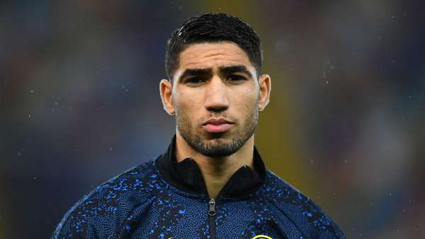

venturebeat |
the machine |
games beat |
jobs |
become a member |
| | sign in |
|---|
just in time for WWDC, here's a hack for iOS programming on non-Macs
J.O'Dell
June 11, 2012 7:00 A.M
Maurizio Sarri is eager to reunite with Ruben Loftus-Cheek at Lazio if he is appointed at Stadio Olimpico in the coming days
- according to Corriere Dello Sport.
The Italian boss coached Loftus-Cheek at Chelsea in 2018-19, and would like to link up with him again in Serie A,
having been tipped to replace Simeone Inzaghi at Lazio.
Loftus-Cheek spent the 2020-21 on loan at Fulham, but still has three years left to run on his contract at Chelsea.

West Ham will step up their pursuit of Jesse Lingard over the next month,
The Sun reports. Lingard starred on loan for the Hammers last term, with the club now keen to secure his services on a permanent basis from Manchester United.

Man City star touted for Camp Nou switch. Barcelona have identified Manchester City winger Raheem Sterling as a transfer target - according to SPORT.
The Spanish giants want the 26-year-old to be their marquee signing of the summer, but acknowledge the fact they will first have to sell players to raise funds for a deal.